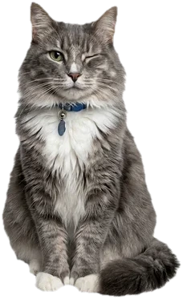

Bump Soccer
Turn-based soccer party gameFree online soccer with friends. Everyone aims in secret, then every shot plays at once.
FreeWebAndroidiOS
snib.games makes online games to play with friends. Snib runs the place: he reviews every build by sitting on the keyboard.

Snib · studio headFour projects, two of them out and running.
Free online soccer with friends. Everyone aims in secret, then every shot plays at once.
A farm your friends can just walk into. Nobody has to be home to host it: whoever turns up first starts it, new or from the save you already have.
@snib in the game chat and ask him anythingA Stardew-style online hack and slash. Cosy fields, less cosy nights.
Something new. Snib has not decided what to tell you yet.
snib.games is a small studio that builds games people play together, in a browser or on a phone, without accounts getting in the way. Snib is a grey longhaired cat with a teal collar. He supervises.
Write to nando@snib.games
Find people to play with, report bugs, and see what is being built before it ships.
Open Discord